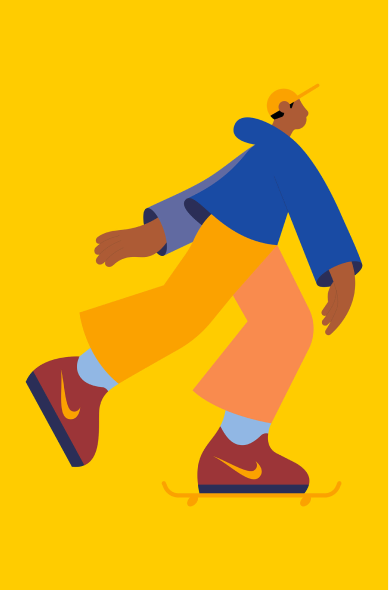
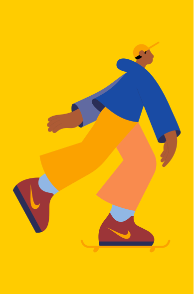
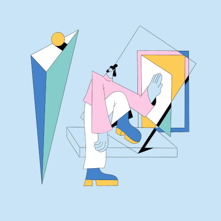
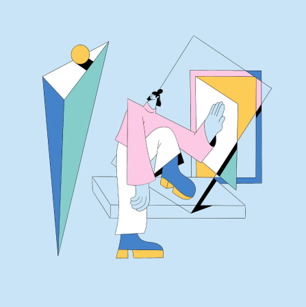

Camilo Huinca
Camilo Huinca's work is rich with colour, content and a brightly illustrated
narrative that speaks for itself. Born and raised in Santiago in Chile, Camilo
has divided his career between graphic design and painting. Working
independently has allowed Camilo to “develop (his) own style, having a
main focus on the use of curiosity,” he explains. In 2014 Camilo set up
Perfe Studio where he concentrates on graphic design projects in “a more
commercial way”. However, within illustration, he described his main
motivation as, “to be able to generate a communication method based on
simplicity and synthesis, with few tools and colours. I am interested in
identifying people’s behaviour, portraying activities, intimate moments,
body gestures, disfiguring objects and reducing the amount of detail in a
composition.” Camilo is fascinated by everyday scenes, moments and
personal habits, often depicting scenic bus routes, art galleries and public
figures in his own psychedelically shaped style. “Within my work I try to
reproduce real moments from an innocent and impartial perspective.”


Tim Lahan
San Francisco-based artist Tim Lahan’s naughty, witty artwork is
the product of his ability to digest and illustrate clever glitches,
concepts and interesting visual cues from the world around him.
“I generally aim to make things as simple as possible,” says Tim. “Sometimes they come out funny.”
Generally commissioned to bring a touch of joy to magazines, brand campaigns and music collateral,
the ADC Young Gun award winner’s instantly recognisable style is enviably simple and genuinely funny:
something very few illustrators can boast.


.png)


Karlotta Freier
Karlotta Freier is an accomplished Brooklyn-based artist with a background in illustration.
In 2021, she graduated from the MFA Illustration as Visual Essay program at
the School of Visual Arts. In addition to her creative pursuits, Karlotta also
dedicates her time to sharing her knowledge with the next generation of artists.
She has taught illustration at the China Academy of Art and spoken as
a guest speaker at universities across the United States.
Freier's work has also been exhibited in a variety of solo and group exhibitions,
as well as festivals worldwide. Her achievements have been recognized by
the Art Directors Club, which awarded her a Cube in 2018 and a Pencil for Best Illustration Portfolio in 2021.


Xoana Herrera
The portfolio of LA-based illustrator Xoana Herrera is an explosion of sumptuous, stylish character scenes dwelling in a world that, frankly, looks ideal. Xoana trained as a graphic designer in Argentina but over time found herself drawn to the world of illustration after a five-year stint at Buck agency. Now, alongside founding
a feminist creative collective, Get it Girl, she creates graceful,
complex and accessible imagery which would be as at home in an ad campaign as it would be in a children’s book (which she's quite keen to try soon). “As an artist I think it is up to us to keep evolving and taking creative decisions,” she says. “Aiming to be innovative is something I feel I can dare to try every time I take a job, and that’s amazing.”


Linn Fritz
Swedish illustrator, designer and animator Linn Fritz lives and works in London where
she creates charmingly clean, precise imagery in a trademark pastel palette for a wide
range of editorial and commercial clients. Her neat, fluid line work was honed
during her time at Hyper Island, a time which Linn cites as
“hands down one of the best experiences” of her life.
“My Hyper Island journey completely changed me as a person.” she says,
“It pushed me to work harder and gave me the tools to succeed in the real world.”
The progressive nature of Hyper Island led Linn to abandon pen and paper and concentrate
on what digital could offer her already well-honed drawings. As she puts it,
“There’s more freedom drawing digitally, and more room for mistakes.”
Alongside her editorial and commercial projects, Linn is the co-founder of Panimation,
“a community of equality-driven women, trans and non-binary friends aiming
to connect and support each other within the animation industry.”
Some of her favorite projects often orbit around her interests of
“feminism, clothes, plants and interior” but Linn also looks for a good client
relationship, one with trust and creative freedom.

 



 


La Boca
La Boca have the rare, impressive ability to create designs and artwork resembling
some of the best album sleeves lurking in your dad’s record collection.
The studio, founded in 2002, is based in west London and has gathered an envious collection
of awards, including Cannes Lions, European Design Awards, and the AOI Illustration Awards.
Their exquisitely executed, psychedelic style is the combined result of each of the
studio's members' unique influences, having hailed from London, Bordeaux, Devon and Switzerland.
“We work as a studio, so most of our designs are created as a team,” says Scott Bendall of La Boca.
“It's not unusual to have two or three people working on a single piece.”
Keen to work on more animated projects in the future, the team (based in two studios,
one in London and one in Amsterdam) are never short on work from a selection of devoted clients.
In their own words, La Boca’s creations are: “Retina teasing, tactile and occasionally slightly wonky.”